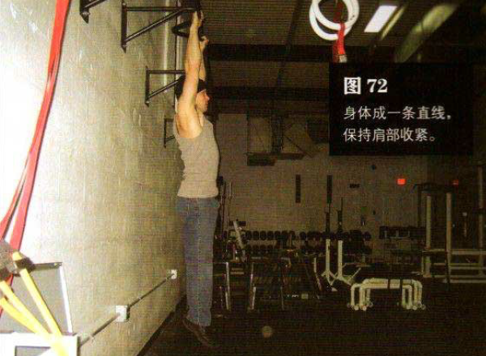
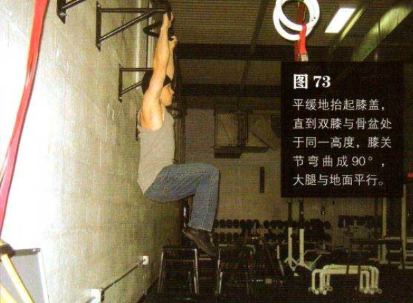

向上跳起，抓住高过头顶的横杆，双手与肩同宽。横杆要够高，以使身体悬垂时双脚依然离地，即使离地仅有一厘米。身体成一条直线，保持肩部收紧（参见第 107 页）。这是该动作的起始姿势（图 72）
平缓地抬起膝盖，直到双膝与骨盆处于同一高度，膝关节弯曲成90°大腿与地面平行。在以上运动过程中呼气，同时保持收腹。这是该动作的结束姿势（图73）
暂停一下，然后反向运动，直到身体完全伸展。在此过程中吸气，然后重复练习。
初级标准：1 组，5 次
中级标准：2 组，各 10 次
高级标准：2 组，各 15 次